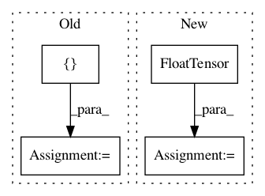

2e90375960c8f10072bbf078e571735f846a2e57,onmt/translate/Translator.py,Translator,__init__,#Translator#Any#Any#Any#Any#Any#Any#Any#Any#Any#Any#Any#,26
Before Change
// for debugging
self.beam_accum = None
if beam_trace:
self.beam_accum = {
"predicted_ids": [],
"beam_parent_ids": [],
"scores": [],
"log_probs": []}
def translate_batch(self, batch, data):
Translate a batch of sentences.
After Change
def __init__(self, model, fields,
beam_size, n_best=1,
max_length=100,
global_scorer=None,
copy_attn=False,
cuda=False,
beam_trace=False,
min_length=0,
stepwise_penalty=False,
In pattern: SUPERPATTERN
Frequency: 6
Non-data size: 4
Instances
Project Name: OpenNMT/OpenNMT-py
Commit Name: 2e90375960c8f10072bbf078e571735f846a2e57
Time: 2018-03-27
Author: s.gehrmann@outlook.com
File Name: onmt/translate/Translator.py
Class Name: Translator
Method Name: __init__
Project Name: ncullen93/torchsample
Commit Name: 6ddf825a4aa1bcf3a35bba8d36bc433fe5ebaa39
Time: 2017-04-24
Author: ncullen@Nicks-MacBook-Pro.local
File Name: torchsample/utils.py
Class Name:
Method Name: th_nearest_interp_2d
Project Name: ncullen93/torchsample
Commit Name: 1344dee35dbacaaaaabdaf452f0dfe74e3ab50e4
Time: 2017-04-19
Author: ncullen@modv-vlan533.0288.apn.wlan.wireless-pennnet.upenn.edu
File Name: torchsample/modules/super_module.py
Class Name: SuperModule
Method Name: evaluate_loader
Project Name: PacktPublishing/Deep-Reinforcement-Learning-Hands-On
Commit Name: d5b0cd8e7960c247bb7c5b7c832358f8831780fb
Time: 2018-04-29
Author: max.lapan@gmail.com
File Name: ch15/02_play.py
Class Name:
Method Name:
Project Name: mozilla/TTS
Commit Name: ff33604df13b348abeb44d87e7c43e6c4033d0f2
Time: 2019-04-15
Author: egolge@mozilla.com
File Name: server/synthesizer.py
Class Name: Synthesizer
Method Name: tts
Project Name: rusty1s/pytorch_geometric
Commit Name: d8a075668b6e9cdf4c08f6c7285e5c7d2fbf5332
Time: 2017-10-17
Author: matthias.fey@tu-dortmund.de
File Name: torch_geometric/graph/geometry.py
Class Name:
Method Name: edges_from_faces